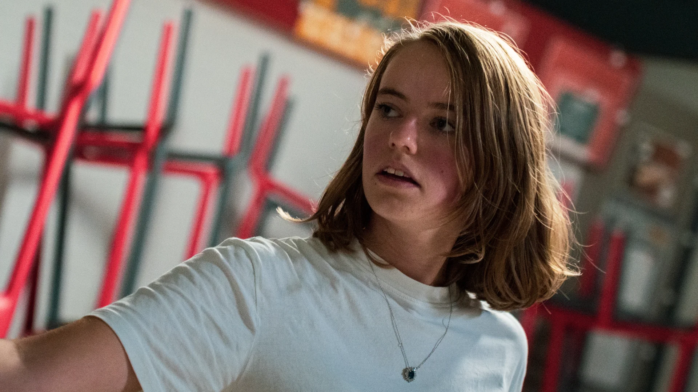

Shootings Inter-BDE
Deux semaines d'événements.
Des souvenirs à garder.
Capturer
l'instant.
La Student 2 Week, organisée par l'Inter-BDE de Laval, c'est deux semaines d'activités pour tous les étudiants de la ville. Chaque soir, un événement différent : cours de rock, murder party dans un musée, pool party à la piscine, et bien d'autres.
J'ai couvert photographiquement plusieurs soirées pour que les étudiants puissent garder des souvenirs de ces moments. Au-delà des photos, j'ai aussi réalisé un aftermovie de la pool party pour le compte Instagram de l'Inter-BDE — un format court pensé pour les réseaux sociaux.
Mon rôle
- Photographe événementiel
- Réalisation aftermovie
- Post-production
Outils
- Appareil photo reflex
- DaVinci Resolve
- Affinity Photo
Livrables
- Reportages photo (plusieurs soirées)
- Aftermovie pool party
- Livraison pour réseaux sociaux
S'adapter
à chaque ambiance.
Chaque soirée avait son identité et ses contraintes. Un cours de rock avec une lumière chaude et des mouvements rapides. Une murder party dans un musée avec des ambiances tamisées. Une pool party en extérieur avec des reflets et du mouvement partout. Il a fallu s'adapter à chaque fois — en termes de réglages, de positionnement, de timing — pour saisir les bons moments.


Du brut
au partageable.
Le tri, le développement et la retouche ont été réalisés pour livrer des séries cohérentes par soirée. Pour la pool party, j'ai monté un aftermovie court et dynamique sur DaVinci Resolve, calibré pour le format Instagram — rapide, rythmé, avec la bonne énergie.